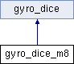

gyro_dice_m8:gyro_dice, magic 8 ball More...
#include <gyro_dice.hpp>
Inheritance diagram for gyro_dice_m8:

Public Member Functions | |
| gyro_dice_m8 (gyro_mpu6050 gyro, hwlib::window_ostream display, hwlib::target::pin_out beeper) | |
| gyro_dice_m8 gyrodice d0 constructor, requests a gyroscope, display and a beeper. On initialization starts the internal arduino clock. | |
| void | check_side () |
 Public Member Functions inherited from gyro_dice Public Member Functions inherited from gyro_dice | |
| gyro_dice (gyro_mpu6050 gyro, hwlib::window_ostream display, hwlib::target::pin_out beeper) | |
| gyro_dice gyrodice constructor, requests a gyroscope, display and a beeper. Updates the dice on initialization. | |
| void | update_dice () |
| update_dice grabs gyroscope values and works them | |
| void | beep_dice () |
| beep_dice sends out a beep | |
| void | print_xyz () |
| print_xyz prints accelX, accelY, accelZ, roll & pitch variables on the display | |
| void | print_text (char str[]) |
| print_text prints text on the display | |
| void | print_number (int i) |
| print_number prints a number on the display | |
| virtual void | set_side () |
| int | get_acX () |
| returns acX | |
| int | get_acY () |
| returns acY | |
| int | get_acZ () |
| returns acZ | |
Detailed Description
gyro_dice_m8:gyro_dice, magic 8 ball
Member Function Documentation
◆ check_side()
|
inlinevirtual |
check_side Checks wether a seed has already been generated, if not then generates a seed based on arduino clock. Afterwards checks if the device is being shaken. if it is, prints a one of 22 random answers from the answers array.
Reimplemented from gyro_dice.
The documentation for this class was generated from the following file: